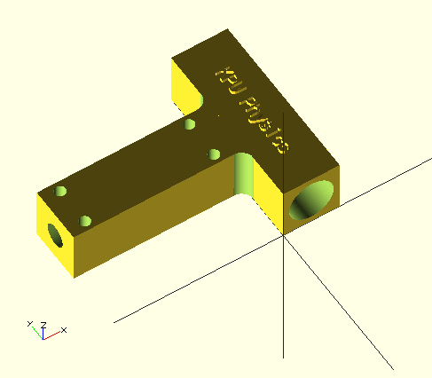

by Dan Peirce B.Sc.The Ditto+
It is pointed out in the Calibration Manual that there are settings for the software that control things like
These settings can be adjusted. For example the default fill is only 10%. This conserves both material and the time it takes to print. It means there will be voids in an otherwise solid part and that one does not need to put these voids in the 3D model.
It is also possible to turn on a feature that will automatically create supports for any parts with extreme overhang (more than 50 degrees). Presumably these supports can be broken off after the part is complete. I would take this to mean that parts can be quite arbitrary in design and easily include assembly tabs. for places that have extreme overhang.
Creating 3D models to be printed requires software.
Both FOSS and Proprietary Packages are Available.
(The software that controls the Ditto+ is also open source)
Blender
There is a part we require for ASTR1100. I have put together our new photometers for Richmond. I still need a fitting to connect the sensor tube to the support rod. I decided try making a 3D solid model of the part as I envision it. Currently I have two versions.
After reading more on 3D printers and thought I should change the design to make a stronger part. Keep in mind that in general that to keep costs down 3D parts are most often printed as a shell with less dense fill. The area interior to the shell is typically made much less dense by including voids. Also I have read that the parts tend to be weakest in the Z direction since the shell and fill are built up one layer at a time. The part essentially ends up as multiple layers laminated together.
The new model looks as shown in these photos

Also, added some text to the object.

I also exported a cutaway view of the part which allow all the features to been seen together. The extra new holes should help to provide support for the shell of the support rod hole. These holes are sized to accept a #4-40 machine screw.